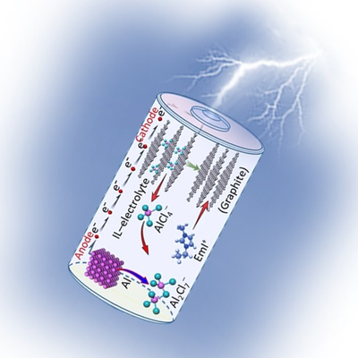

The global shift towards renewable energy has intensified the demand for efficient and sustainable energy storage solutions. While lithium-ion batteries have dominated the market, their limitations in terms of cost, environmental impact, and performance have spurred the exploration of alternatives. Aluminum-ion batteries emerge as a promising candidate.
Unlike lithium-ion batteries, which rely on finite lithium resources, aluminum-ion batteries utilize abundant and recyclable aluminum. This fundamental difference positions them as a more sustainable energy storage option. Additionally, aluminum-ion batteries offer the potential for higher energy density and faster charging speeds, making them attractive for various applications.

However, challenges persist. Developing materials that can efficiently facilitate aluminum ion transfer and optimizing the battery's overall performance remain crucial areas of research. Addressing safety concerns and extending battery life are also essential for commercial viability.
Despite these hurdles, the potential benefits of aluminum-ion batteries are undeniable. If researchers can overcome the current obstacles, this technology could revolutionize energy storage, reducing our reliance on fossil fuels and mitigating climate change. By harnessing the power of aluminum, aluminum-ion batteries offer a promising pathway toward a cleaner and more sustainable future.